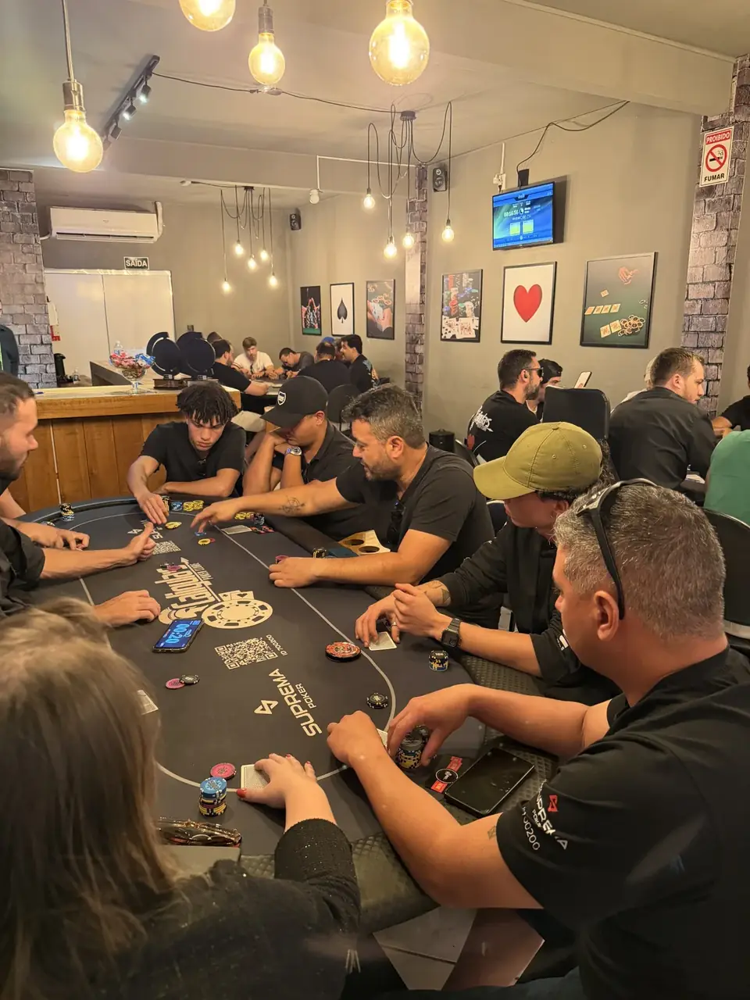
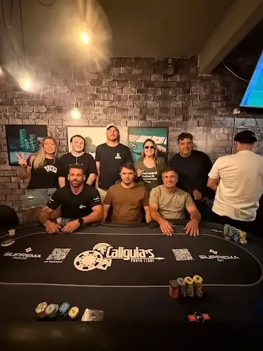
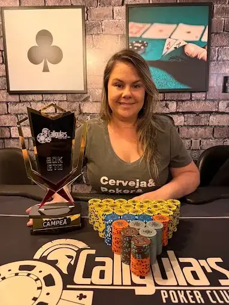
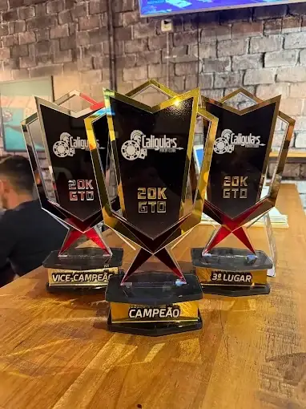

Poker live • Passos–MGPoker é sobre
quem está à mesa.
O Caligulas começou no online e levou para o live o que já reunia sua comunidade: competição, boas conversas e o prazer de jogar entre amigos.


Do online
para a mesa.
A conexão entre jogadores ganhou outra dimensão no poker presencial. Hoje, o Caligulas é um ponto de encontro em Passos, com torneios, jogos recorrentes e momentos que fazem parte da história da casa.
A proximidade do live mantém o que deu início à comunidade: gente que compartilha a vontade de jogar, competir e voltar a se encontrar.
Conhecer a casa ↗A casa continua
além de cada partida.
Confira a agenda, acompanhe a temporada e reveja os momentos da comunidade nos canais oficiais.
Programação
Jogos recorrentes e próximos encontros da casa.
Ver agenda ↗ TemporadaRanking
Resultados e classificação para acompanhar a disputa.
Consultar ranking ↗ MemóriasGaleria
Mesas, jogadores e registros dos encontros do clube.
Ver galeria ↗ Eventos especiaisCaligulas
Poker Series
Conheça a série de torneios da casa.
Conhecer a CPS ↗Mesas que criam histórias.
O encontro, a competição e as conquistas aparecem nos registros de quem faz parte do Caligulas.



Encontre a programação, o ranking e os próximos encontros no site oficial.
Conhecer Caligulas →